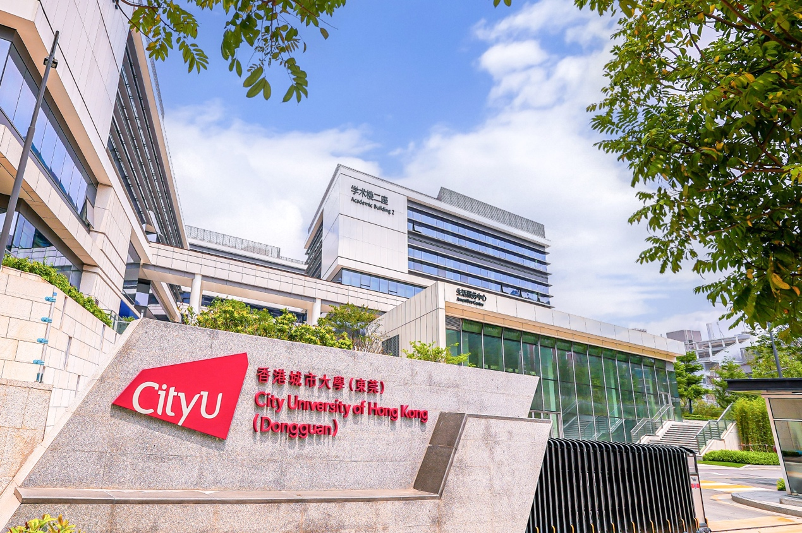

ABOUT THE PROJECT
Project overview项目简介
The Business Artificial Intelligence Lab aims to build an interdisciplinary research and teaching centre for business-oriented AI in the Greater Bay Area, bringing together the strengths of the Hong Kong and Dongguan campuses.商业人工智能实验室致力于建设以商务应用为导向的人工智能交叉学科科研教学中心，发挥香港与东莞双校区的技术资源互补优势。
Mission and approach使命与方法
The Business Artificial Intelligence Lab (B-AI Lab) is dedicated to advancing the deep integration of industry, academia, research, and practical application. By capitalizing on the complementary technological resources and strengths of its Hong Kong and Dongguan campuses, the Lab seeks to foster interdisciplinary innovation and address real-world business challenges through cutting-edge artificial intelligence research and education. Unlike traditional AI labs that lean heavily toward pure computer science, this lab focuses exclusively on innovative research and solutions to real-world business problems.商业人工智能实验室（Business Artificial Intelligence Lab）以“产学研用”深度融合为核心发展理念，充分发挥香港与东莞双校区的技术资源互补优势。与传统偏向纯计算机科学的 AI 实验室不同，本实验室精准聚焦现实商业问题的创新性研究及解决方案。
We will deeply integrate cutting-edge generative AI and multi-agent collaborative systems with classical economic and management methodologies, such as causal inference and design science. The core scientific question this project is committed to solving is: In complex business and social systems, how can organizational efficiency, marketing, financial decision-making, and public infrastructure management be reshaped through mechanism design and digital-intelligent technologies?我们将前沿的生成式人工智能、多智能体协同系统与因果推断、设计科学等经典经济管理学方法论深度融合。本实验室重点关注的核心科学问题是：在复杂的商业与社会系统中，如何通过机制设计与数智化技术重塑组织效率、市场营销、金融决策与公共基础设施管理？

Explore research directions查看研究方向 ↗